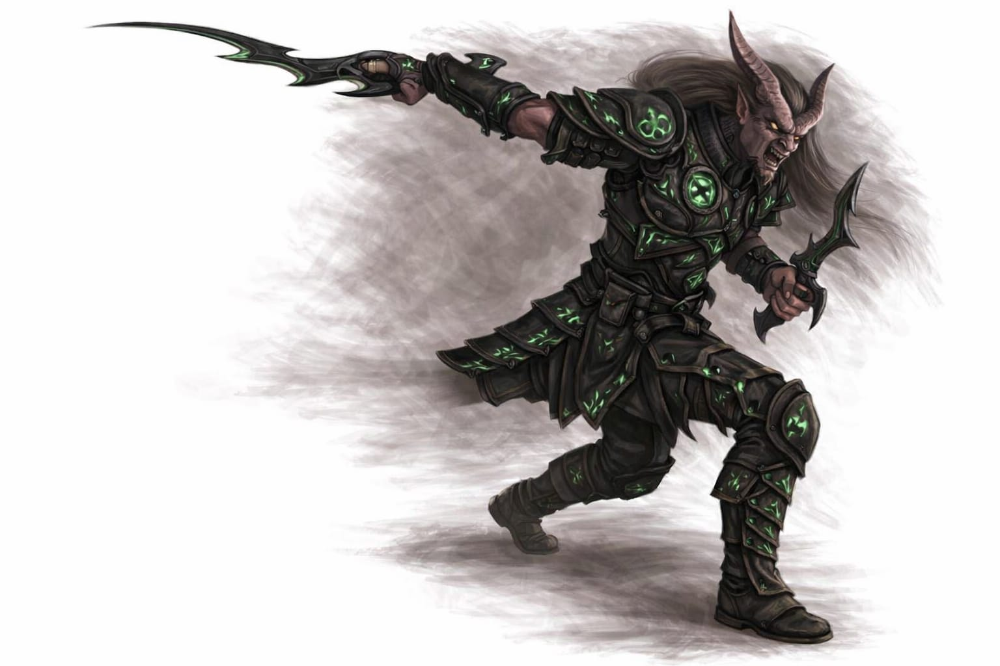
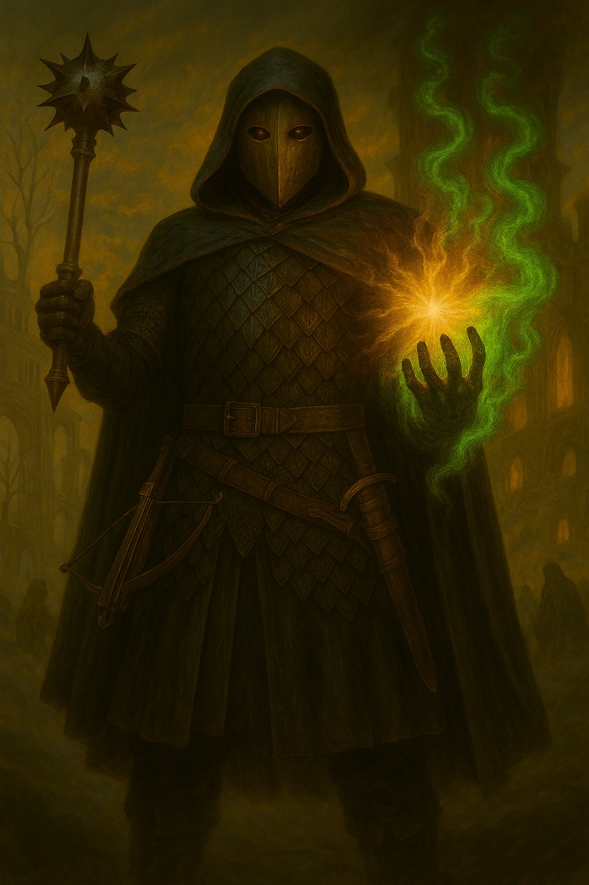
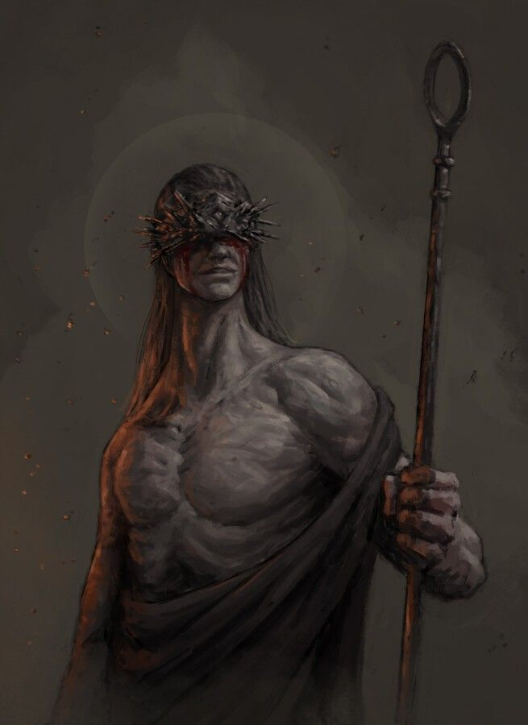
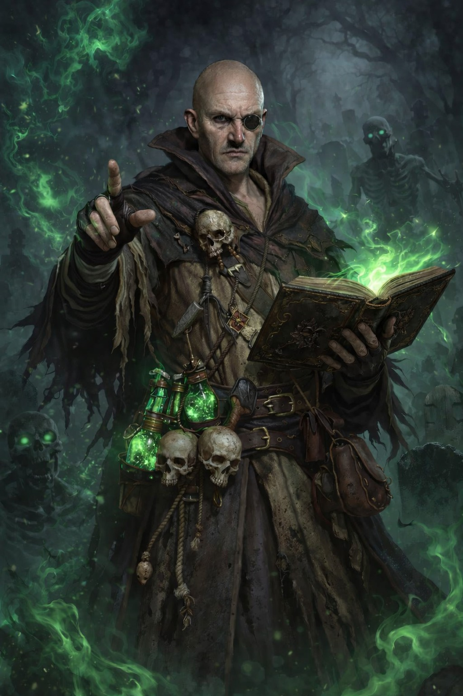
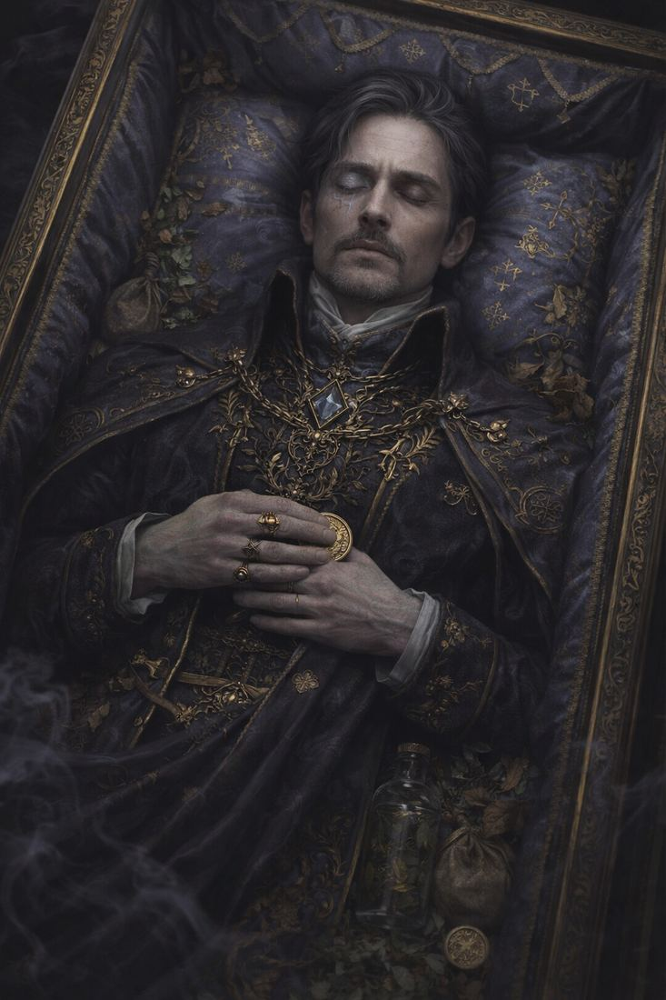
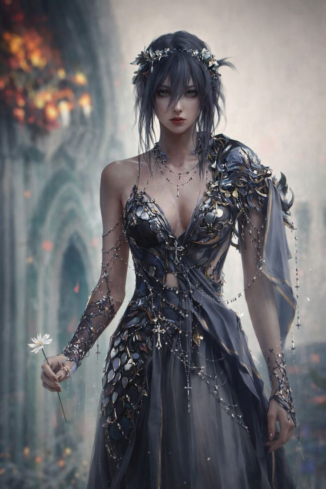
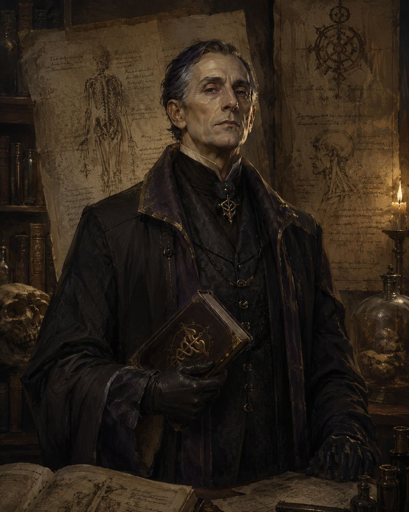

Abraxas
Ex schiavo dell'Underdark, liberato da un patto con il Signore delle Mosche.
Ogni scheda raccoglie immagine, descrizione e background pubblico del personaggio.

Ex schiavo dell'Underdark, liberato da un patto con il Signore delle Mosche.

Tra piaga e guarigione, maledizione e fede.

Studioso del sangue curativo, cieco e devoto a Loviatar.

Medico, artista, necromante. Vede nella non morte una forma di bellezza.

Vittima della Crucimigrazione, privato del nome e di quasi ogni ricordo umano.

Mercante benestante, pianto al proprio funerale. Ma la morte non sembra averlo trattenuto.

Figlia di Varek, volto pubblico del lutto e prima presenza ad accogliere il gruppo.

Direttore dell’Istituto di Biologia Ereditaria di Portogrigio, medico e ricercatore.

Mercante planare apparso nel deserto oltre una tenda impossibile, disposto a offrire doni dal prezzo ambiguo.